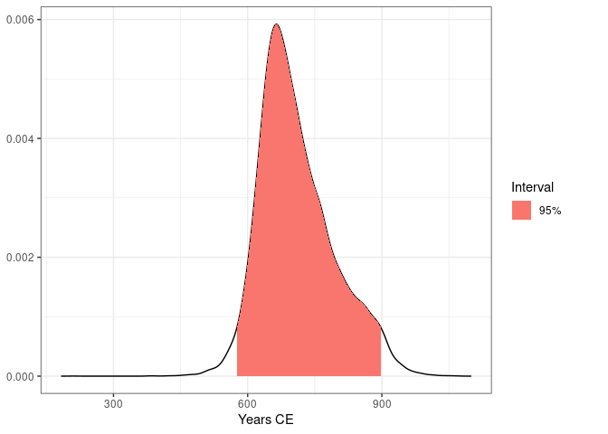

Overview
Datasets for chronological modelling with chronos. This package provides models and data to reproduce results from chronos examples and vignettes.
Installation
You can install the latest version of fasti from our repository with:
install.packages("fasti", repos = "https://tesselle.r-universe.dev")Usage
The inst/ directory contains:
-
ChronoModel v2.0.18 project files and output files (in the
chronomodel/subdirectory). -
OxCal v4.4.4 script and output files (in the
oxcal/subdirectory). -
BCal output files (in the
bcal/subdirectory).
ChronoModel
This package allows to replicate the following results:
-
ksarakil: chronology of Ksâr’Akil (Lebanon) – Bosch et al. -
lezoux: chronology of a potter’s kiln from Lezoux (France) – Menessier-Jouannet et al. (1995)
## Install chronos
# install.packages("chronos")
library(chronos)
## Import ChronoModel output
lezoux_path <- system.file("chronomodel/lezoux/Chain_all_Events.csv",
package = "fasti")
lezoux_event <- read_chronomodel_events(lezoux_path, sep = ";", dec = ",")
## Plot MCMC sample
plot(lezoux_event, interval = "hpdi")
OxCal
This package allows to replicate Bosch et al. (2015) results with OxCal (and ChronoModel).
## Install and load oxcAAR
# install.packages("oxcAAR")
library(oxcAAR)
## Download and setup OxCal
quickSetupOxcal()
## Import the OxCal script
path_script <- system.file("oxcal/ksarakil.oxcal", package = "fasti")
ksarakil_script <- paste0(readLines(path_script), collapse = "\n")
## Execute OxCal
ksarakil_file <- executeOxcalScript(ksarakil_script)
ksarakil_text <- readOxcalOutput(ksarakil_file)
ksarakil_data <- parseFullOxcalOutput(ksarakil_text)
## Get the MCMC samples
path_mcmc <- paste0(dirname(ksarakil_file), "/MCMC_Sample.csv")
mcmc <- read.csv(path_mcmc, header = TRUE, sep = ",", dec = ".")References
Bosch, M. D., Mannino, M. A., Prendergast, A. L., O’Connell, T. C., Demarchi, B., Taylor, S. M., Niven, L., van der Plicht, J. and Hublin, J.-J. (2015). New Chronology for Ksâr’Akil (Lebanon) Supports Levantine Route of Modern Human Dispersal into Europe. Proceedings of the National Academy of Sciences, 112(25): 7683-8. DOI: 10.1073/pnas.1501529112.
Menessier-Jouannet, C., Bucur IIiana, E. J., Lanos P., Miallier D. (1995). Convergence de la typologie de céramiques et de trois méthodes chronométriques pour la datation d’un four de potier à Lezoux (Puy-de-Dôme). Revue d’Archéométrie, 19: 37-47. DOI: 10.3406/arsci.1995.926.
Contributing
Please note that the fasti project is released with a Contributor Code of Conduct. By contributing to this project, you agree to abide by its terms.